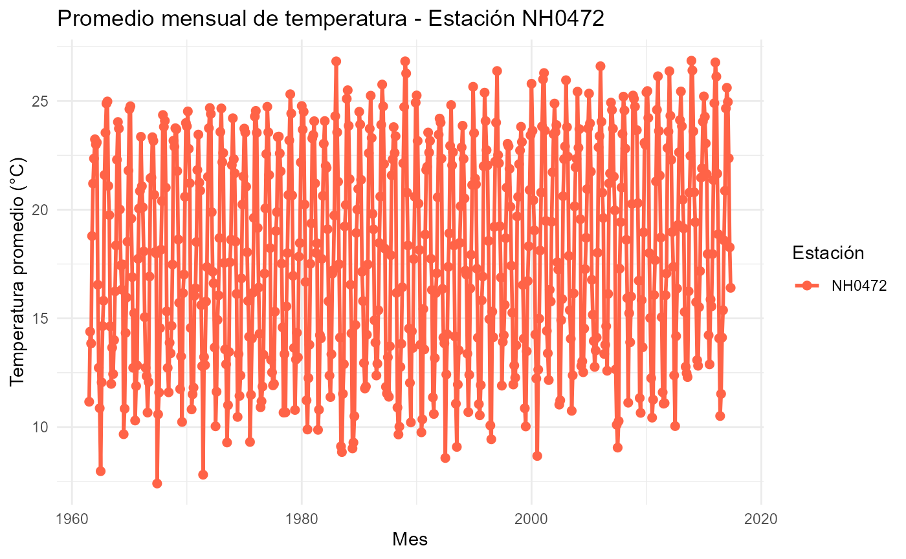

Análisis de datos meteorológicos con el paquete analisis.clima
Source:vignettes/analisis_clima.Rmd
analisis_clima.Rmd
source("../R/leer_estacion.R")
source("../R/tabla_resumen_temperatura.R")
source("../R/grafico_temperatura_mensual.R")Cómo usar el paquete
El paquete analisis.clima permite descargar, leer y analizar datos meteorológicos de diferentes estaciones.
Las funciones incluidas permiten: - Leer los archivos de datos de cada estación. - Calcular estadísticas básicas de temperatura. - Visualizar las temperaturas promedio mensuales.
En esta viñeta se muestra cómo utilizarlas paso a paso.
1. Leer los datos de una estación
La función leer_estacion() descarga los datos desde una fuente remota (si es necesario) y los guarda en formato CSV en la ruta indicada. Ejemplo de uso
# Metadatos
metadatos <- leer_estacion("metadatos_completos", "../datos/metadatos.csv")
#> El archivo ya está descargado, se procede a leerlo...
# Estaciones
NH0472 <- leer_estacion("NH0472", "../datos/NH0472.csv")
#> El archivo ya está descargado, se procede a leerlo...
NH0910 <- leer_estacion("NH0910", "../datos/NH0910.csv")
#> El archivo ya está descargado, se procede a leerlo...
NH0046 <- leer_estacion("NH0046", "../datos/NH0046.csv")
#> El archivo ya está descargado, se procede a leerlo...
NH0098 <- leer_estacion("NH0098", "../datos/NH0098.csv")
#> El archivo ya está descargado, se procede a leerlo...
NH0437 <- leer_estacion("NH0437", "../datos/NH0437.csv")
#> El archivo ya está descargado, se procede a leerlo...2. Tabla resumen
Podemos calcular la temperatura el promedio, el máximo, mínimo, entre otras, a 150 cm de altura usando la función tabla_resumen_temperatura():
resumen_NH0472 <- tabla_resumen_temperatura(NH0472)
resumen_NH0472
#> # A tibble: 1 × 6
#> id variable media mediana minimo maximo
#> <chr> <chr> <dbl> <dbl> <dbl> <dbl>
#> 1 NH0472 temperatura_abrigo_150cm 18.0 18.5 0.55 34.83. Visualización de datos
La función grafico_temperatura_mensual() genera un gráfico con los valores promedios de temperatura por mes, para cada estación. Esto permite observar la evolución promedio de la temperatura a lo largo del año, facilitando la comparación entre diferentes estaciones o periodos.
grafico_NH0472 <- grafico_temperatura_mensual(
datos = NH0472,
colores = "tomato",
titulo = "Promedio mensual de temperatura - Estación NH0472"
)
#> Warning: Using `size` aesthetic for lines was deprecated in ggplot2 3.4.0.
#> ℹ Please use `linewidth` instead.
#> This warning is displayed once every 8 hours.
#> Call `lifecycle::last_lifecycle_warnings()` to see where this warning was
#> generated.
grafico_NH0472
#> Warning: Removed 1 row containing missing values or values outside the scale range
#> (`geom_line()`).
#> Warning: Removed 1 row containing missing values or values outside the scale range
#> (`geom_point()`).